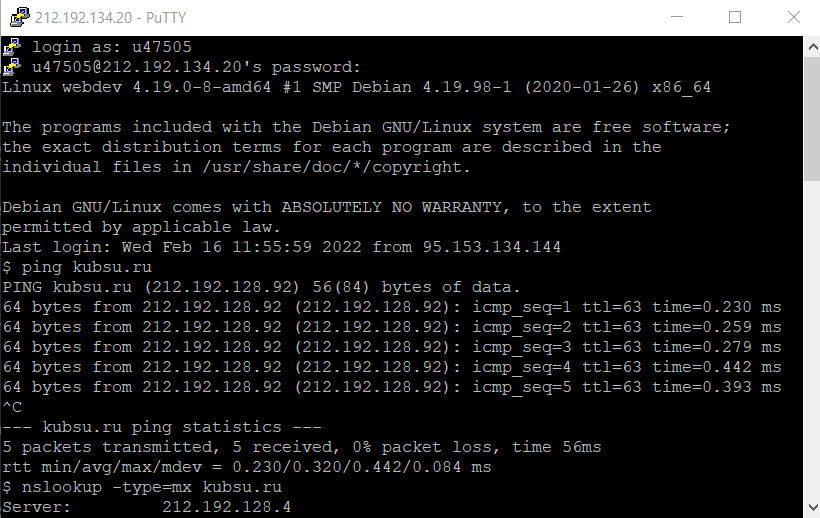

Подключаем приложение PuTTy
Подключаем утилиту ping, это позволит оценить качество подключения, а так же время, необходимое для преодоления пути к другому компьютеру и обратно.

С помощью утилиты nslookup, узнаем содежимое DNS(Domain Name System), а спомощью записи mx, укажем на сервере почту для данного домена
С помощью протокола whois сделаем запрос в базу данных, где храняться зарегистрированные пользователи,блок IP-адрессов и т.д..
А так же этот протокол используется для более широкого спектра другой информации
С помощью git clone создаём копию репозитория
На нём мы смотрим скаченные файлы.